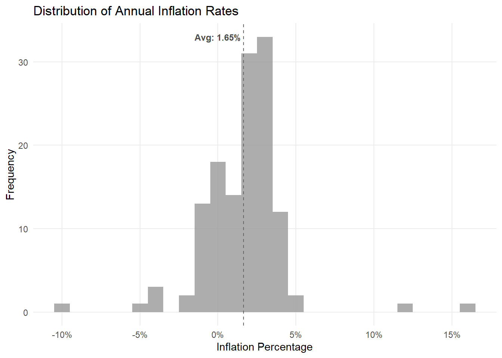
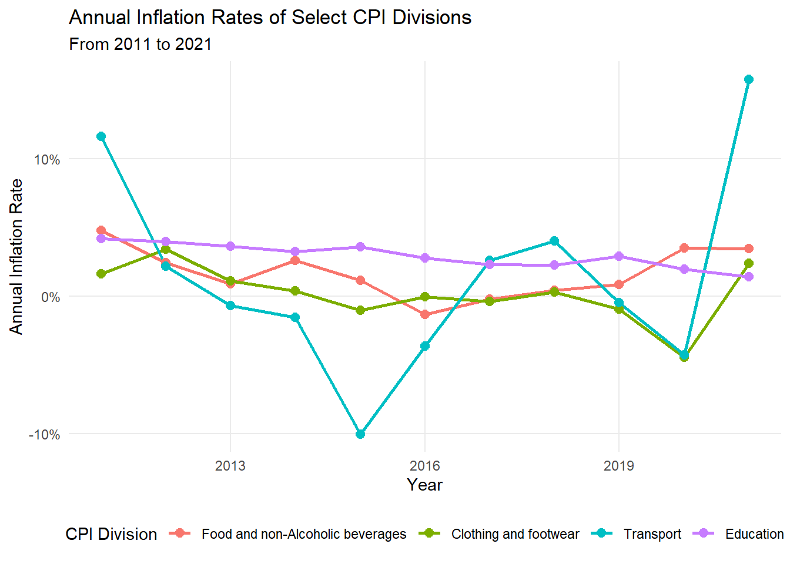

Code
library(tidyverse)
library(readxl)
library(scales)
library(skimr)US Inflation Analysis
An exploratory data analysis (EDA) was conducted to analyze a dataset with historical inflation data (from 2011 to 2021) from 12 CPI divisions. A second dataset was used to obtain the description of the divisions, through a join using the key variable.
The Organisation for Economic Co-operation and Development defines inflation as follows:
Inflation is a rise in the general level of prices of goods and services that households acquire for the purpose of consumption in an economy over a period of time.
The main measure of inflation is the annual inflation rate which is the movement of the Consumer Price Index (CPI) from one month/period to the same month/period of the previous year expressed as percentage over time.
Source: OECD CPI FAQ
CPI is broken down into 12 divisions such as food, housing, health, etc.
This analysis seeks to provide a historical perspective for public policy analysts, using the data to produce the following:
Bonus Chapter: Clustering
library(tidyverse)
library(readxl)
library(scales)
library(skimr)The data needed to explore US inflation are spread across two files:
The following steps import and provide an initial overview of the datasets:
us-inflation
#|label: reading-csv-file
#read csv file
us_inflation <- read_csv(file = "data/us-inflation.csv", show_col_types = FALSE)
#glimpse csv file
glimpse(us_inflation)Rows: 12
Columns: 13
$ country <chr> "United States", "United States", "United States", "Un…
$ cpi_division_id <dbl> 1, 2, 3, 4, 5, 6, 7, 8, 9, 10, 11, 12
$ `2011` <dbl> 4.8039240, 2.1728440, 1.6313930, 1.4973190, -0.4152586…
$ `2012` <dbl> 2.4539620, 1.6838880, 3.4504560, 1.7225210, 0.6908713,…
$ `2013` <dbl> 0.9083796, 2.0862630, 1.1026810, 2.4054070, -0.8977697…
$ `2014` <dbl> 2.63980100, 1.98985000, 0.39516940, 2.96942900, -1.445…
$ `2015` <dbl> 1.16771100, 1.71948600, -0.99873560, 2.33140200, -0.73…
$ `2016` <dbl> -1.32534900, 2.28382600, -0.02269053, 2.84727700, -1.1…
$ `2017` <dbl> -0.2021815, 3.5153640, -0.3733105, 3.4571830, -0.90076…
$ `2018` <dbl> 0.45556470, 2.61149900, 0.32713790, 3.16282900, 0.5484…
$ `2019` <dbl> 0.8851313, 3.2508660, -0.9156038, 3.0409520, 1.7480280…
$ `2020` <dbl> 3.505030, 3.413118, -4.453169, 2.588173, 1.747593, 2.3…
$ `2021` <dbl> 3.469165, 4.461650, 2.394024, 3.020479, 4.405128, 2.06…cpi-divisions
#|label: reading-excel-file
#| warning: false
#| message: false
#read excel file
cpi_divisions <- read_excel(path = "data/cpi-divisions.xlsx", .name_repair = "unique_quiet")
#glimpse excel file
glimpse(cpi_divisions)Rows: 13
Columns: 2
$ `A “lookup table” of CPI division ID numbers and their descriptions.` <chr> …
$ ...2 <chr> …During the initial inspection, it was identified that the Excel file contained metadata in the first row, so it was skipped to ensure a clean load.
#|label: fixing-excel-file
#read excel file
cpi_divisions <- read_excel(path = "data/cpi-divisions.xlsx", skip = 1)
#glimpse excel file
glimpse(cpi_divisions)Rows: 12
Columns: 2
$ id <dbl> 1, 2, 3, 4, 5, 6, 7, 8, 9, 10, 11, 12
$ description <chr> "Food and non-Alcoholic beverages", "Alcoholic beverages, …A data table for each dataset can be seen below:
us-inflation
| Variable | Description |
|---|---|
country |
location data; all values “United States”. |
cpi_division_id |
numerical value to represent cpi division. |
2011 |
annual inflation percentage for the year 2011 by cpi division. |
2012 |
annual inflation percentage for the year 2012 by cpi division. |
... |
… |
2021 |
annual inflation percentage for the year 2021 by cpi division. |
cpi-divisions
| Variable | Description |
|---|---|
id |
numerical value to represent cpi division. |
description |
description of the cpi value. |
As noted during the initial inspection, the us_inflation dataset is in a wide format. To facilitate the analysis, it will be transformed into a long format using tidyr::pivot_longer().
#|label: pivot-us-inflation
#pivoting data
us_inflation_long <- us_inflation |>
pivot_longer(
cols = !c(country, cpi_division_id),
names_to = "year",
values_to = "inflation",
names_transform = list(year = as.double)
)Now we can pass the division description to this longer table, using the data in cpi-divisions.
#|label: create-final-table
#joining data
inflation_joined <- us_inflation_long |>
left_join(cpi_divisions, join_by(cpi_division_id == id))
inflation_joined# A tibble: 132 × 5
country cpi_division_id year inflation description
<chr> <dbl> <dbl> <dbl> <chr>
1 United States 1 2011 4.80 Food and non-Alcoholic beverag…
2 United States 1 2012 2.45 Food and non-Alcoholic beverag…
3 United States 1 2013 0.908 Food and non-Alcoholic beverag…
4 United States 1 2014 2.64 Food and non-Alcoholic beverag…
5 United States 1 2015 1.17 Food and non-Alcoholic beverag…
6 United States 1 2016 -1.33 Food and non-Alcoholic beverag…
7 United States 1 2017 -0.202 Food and non-Alcoholic beverag…
8 United States 1 2018 0.456 Food and non-Alcoholic beverag…
9 United States 1 2019 0.885 Food and non-Alcoholic beverag…
10 United States 1 2020 3.51 Food and non-Alcoholic beverag…
# ℹ 122 more rowsBefore diving into specific questions, let’s transform the data types of some variables and then examine the structure and integrity of the final dataset.
#|label: data-summary
#transform data types
inflation_joined <- inflation_joined |>
mutate(
description = fct_reorder(description, cpi_division_id),
cpi_division_id = as.factor(cpi_division_id),
)
#complete summary of statistics and null values
skim(inflation_joined)| Name | inflation_joined |
| Number of rows | 132 |
| Number of columns | 5 |
| _______________________ | |
| Column type frequency: | |
| character | 1 |
| factor | 2 |
| numeric | 2 |
| ________________________ | |
| Group variables | None |
Variable type: character
| skim_variable | n_missing | complete_rate | min | max | empty | n_unique | whitespace |
|---|---|---|---|---|---|---|---|
| country | 0 | 1 | 13 | 13 | 0 | 1 | 0 |
Variable type: factor
| skim_variable | n_missing | complete_rate | ordered | n_unique | top_counts |
|---|---|---|---|---|---|
| cpi_division_id | 0 | 1 | FALSE | 12 | 1: 11, 2: 11, 3: 11, 4: 11 |
| description | 0 | 1 | FALSE | 12 | Foo: 11, Alc: 11, Clo: 11, Hou: 11 |
Variable type: numeric
| skim_variable | n_missing | complete_rate | mean | sd | p0 | p25 | p50 | p75 | p100 | hist |
|---|---|---|---|---|---|---|---|---|---|---|
| year | 0 | 1 | 2016.00 | 3.17 | 2011.00 | 2013.00 | 2016.00 | 2019.00 | 2021.0 | ▇▅▅▅▅ |
| inflation | 0 | 1 | 1.65 | 2.62 | -10.02 | 0.36 | 2.09 | 2.86 | 15.8 | ▁▂▇▁▁ |
The final merged dataset consists of 132 observations across 5 variables, covering 12 CPI divisions over an 11-year period (2011-2021). A preliminary inspection via the skim() function confirms the following:
Data Integrity: There are no missing values (n_missing = 0) across all columns, ensuring a successful join between inflation rates and division descriptions.
Distribution: The average annual inflation rate stands at 1.65%, with a standard deviation of 2.62. This spread suggests significant volatility among different sectors.
Extreme Values: The presence of long “tails” validates the existence of outliers, ranging from a minimum deflation of -10.02% to a maximum peak of 15.8%.
#|label: histogram
#|fig-cap: "Figure 1. Annual Inflation Percentage Dispersion"
global_rate <- mean(inflation_joined$inflation)
inflation_joined |>
mutate(inflation = inflation/100) |>
ggplot(aes(x = inflation)) +
geom_histogram(binwidth = 0.01, fill = "gray60", alpha = 0.8) +
geom_vline(xintercept = 0.0165, linetype = "dashed", color = "gray40") +
annotate(
"text",
x = 0,
y = 33,
label = paste("Avg:", percent(global_rate/100, 0.01)),
color = "gray30",
size = 3.1,
fontface = "bold"
) +
scale_x_continuous(
labels = scales::percent,
breaks = seq(-0.15, 0.2, 0.05)
) +
labs(
title = "Distribution of Annual Inflation Rates",
x = "Inflation Percentage",
y = "Frequency"
)+
theme_minimal() +
theme(panel.grid.minor = element_blank()) 
Calculate the minimum and maximum annual inflation percentage for each CPI Division.
#|label: tabble-summary
#Complete summary of statistics and null values
inflation_joined |>
group_by(description) |>
summarise(
min_inflation = min(inflation),
year_min = year[which.min(inflation)],
max_inflation = max(inflation),
year_max = year[which.max(inflation)]
) |>
mutate(
min_inflation = paste0(round(min_inflation,2),"%"),
max_inflation = paste0(round(max_inflation,2),"%")
) |>
knitr::kable(
col.names = c("CPI Division", "Min Inflation", "Year (Min)",
"Max Inflation", "Year (max)"),
align = "lcccc",
caption = "Table 1. Min and Max Annual Inflations by CPI Division"
)| CPI Division | Min Inflation | Year (Min) | Max Inflation | Year (max) |
|---|---|---|---|---|
| Food and non-Alcoholic beverages | -1.33% | 2016 | 4.8% | 2011 |
| Alcoholic beverages, tobacco and narcotics | 1.68% | 2012 | 4.46% | 2021 |
| Clothing and footwear | -4.45% | 2020 | 3.45% | 2012 |
| Housing, water, electricity, gas and other fuels | 1.5% | 2011 | 3.46% | 2017 |
| Furnishings, household equipment and routine household maintenance | -1.45% | 2014 | 4.41% | 2021 |
| Health | 1.16% | 2019 | 3.45% | 2016 |
| Transport | -10.02% | 2015 | 15.8% | 2021 |
| Communication | -5.48% | 2017 | 2.36% | 2020 |
| Recreation and culture | -0.32% | 2011 | 2.6% | 2021 |
| Education | 1.41% | 2021 | 4.18% | 2011 |
| Restaurants and hotels | 0.42% | 2012 | 5.04% | 2021 |
| Miscellaneous goods and services | 1.21% | 2021 | 3.89% | 2016 |
Analysis:
The summary of annual inflation percentages by CPI division reveals a diverse economic landscape across the 11-year period:
High Volatility: The Transport sector stands out as the most volatile, recording both the lowest minimum (-10.02% in 2015) and the highest maximum (15.8% in 2021). While the dataset does not specify external causes, this behavior is typical of sectors highly dependent on global commodity prices.
Deflationary Trends: Several divisions experienced periods of deflation (negative inflation), most notably Communication at -5.48% and Clothing and footwear at -4.45%.
Relative Stability: In contrast, sectors like Education and Health maintained positive inflation rates throughout the entire decade, with minimums above 1.1% and relatively narrow ranges compared to other categories.
Synchronized 2021 Peaks: A key finding is the inflationary surge toward the end of the study period. Nearly half of the categories (5 out of 12) reached their maximum historical inflation in 2021.
Create a plot of annual inflation vs. year for divisions 1, 3, 7, and 10.
#|label: rates-evolution
#| fig-cap: "Figure 2. Annual Inflation Rates Evolution"
#filtering divisions
inflation_joined |>
filter(cpi_division_id %in% c(1,3,7,10)) |>
mutate(inflation = inflation/100)|>
ggplot(aes(x = year, y = inflation,
color = description,
group = description)) +
geom_line(linewidth = 1) +
geom_point(size = 2.5) +
geom_hline(yintercept = 0, color = "black",
linewidth = 0.5, linetype = "dashed",
alpha = 0.5) +
scale_color_viridis_d(option = "plasma") +
scale_linetype_manual(values = c("solid", "dashed", "dotted", "dotdash")) +
scale_y_continuous(
labels = scales::percent,
breaks = seq(-0.1, 0.1, 0.1)
) +
scale_x_continuous(breaks = seq(2011, 2021, 2)) +
labs(
title = "Annual Inflation Rates of Select CPI Divisions",
subtitle = "From 2011 to 2021",
x = "Year",
y = "Annual Inflation Rate",
color = "CPI Division",
linetype = "CPI Division"
) +
theme_minimal() +
theme(
legend.position = "bottom",
legend.box = "vertical",
legend.title = element_text(hjust = 0.5),
panel.grid.minor = element_blank()
) +
guides(
color = guide_legend(
title.position = "top",
title.hjust = 0.5
),
linetype = guide_legend(
title.position = "top",
title.hjust = 0.5
)
)
Analysis:
The visual analysis of selected CPI divisions (1, 3, 7, and 10) illustrates how different sectors respond to economic cycles:
The 2015 Energy Shock: The most prominent feature of the plot is the sharp decline in the Transport division (Division 7), which hit a historical low of -10.02% in 2015. This dramatic drop visually confirms the sector’s extreme sensitivity to external shocks, likely tied to global energy price collapses during that year.
Sector Divergence: While Transport shows high volatility, the other selected divisions—such as Food and non-alcoholic beverages (Division 1) and Clothing and footwear (Division 3)—exhibit much smoother trajectories with less drastic annual swings.
Convergent Recovery: Toward the end of the period, there is a clear upward trend across multiple lines. The Transport sector, in particular, shows a steep recovery from its 2020 pandemic low (-4.45%) to its peak in 2021.
Consistent Mid-Period Stability: Between 2016 and 2019, most selected divisions showed a period of relative stabilization, with inflation rates hovering closer to the overall mean of 1.65% before the disruptions of the final two years.
Which CPI divisions most frequently experienced deflationary periods between 2011 and 2021, and how does this impact long-term price stability?
#|label: deflation-freq
#| fig-cap: "Figure 3. Deflation Frequency"
# 1- Bar chart
inflation_joined |>
filter(inflation < 0) |>
group_by(description) |>
summarize(n = n()) |>
ggplot(aes(x = fct_reorder(description, -n), y = n)) +
geom_col(aes(alpha = n), fill = "steelblue", show.legend = FALSE) +
geom_text(aes(label = n), vjust = -0.5, fontface = "bold", color = "gray30") +
scale_alpha_continuous(range = c(0.4, 1)) +
scale_x_discrete(labels = scales::label_wrap(18)) +
scale_y_continuous(labels = NULL, limits = c(0, 8)) +
labs(
title = "CPI Divisions with Deflation Frequency",
subtitle = "Number of years with negative inflation (2011-2021)",
x = NULL,
y = NULL
) +
theme_minimal() +
theme(
panel.grid.minor = element_blank(),
panel.grid.major.x = element_blank(),
axis.text.x = element_text(size = 9)
)
# 2- summary table
inflation_joined |>
filter(inflation < 0) |>
group_by(description) |>
summarise(
years = paste(sort(year), collapse = ", "),
count = n()
) |>
arrange(desc(count)) |>
select(-count) |>
knitr::kable(
col.names = c("CPI Division", "Years with Negative Inflation"),
caption = "Table 2. Detailed Years of Deflationary Periods"
)| CPI Division | Years with Negative Inflation |
|---|---|
| Communication | 2011, 2014, 2015, 2016, 2017, 2018, 2019 |
| Furnishings, household equipment and routine household maintenance | 2011, 2013, 2014, 2015, 2016, 2017 |
| Transport | 2013, 2014, 2015, 2016, 2019, 2020 |
| Clothing and footwear | 2015, 2016, 2017, 2019, 2020 |
| Food and non-Alcoholic beverages | 2016, 2017 |
| Recreation and culture | 2011, 2014 |
Analysis:
The analysis of deflation frequency provides critical insights into which sectors are most prone to price contractions, a key indicator for economic stimulus planning:
High Deflation Frequency: The Communication sector is the most frequent outlier, experiencing deflation in 7 out of 11 years. This persistent trend may be driven by rapid technological advancements and intense market competition, suggesting it is a sector where consumers consistently gain purchasing power.
Recurrent Volatility: Both Transport and Furnishings & Household Maintenance recorded 6 years of deflation. For public policy, this highlights these sectors as primary candidates for “economic safety nets,” as they are highly susceptible to global supply chain disruptions and shifts in consumer demand.
Resilient Categories: In contrast, sectors like Food and non-alcoholic beverages and Recreation and culture experienced only 2 years of deflation, indicating they are more resistant to price drops and generally follow a more stable inflationary path.
This “Deflationary Map” allows analysts to prioritize sectors that might require intervention during economic downturns, identifying Communication and Transport as the most structurally sensitive areas within the CPI.
TBD